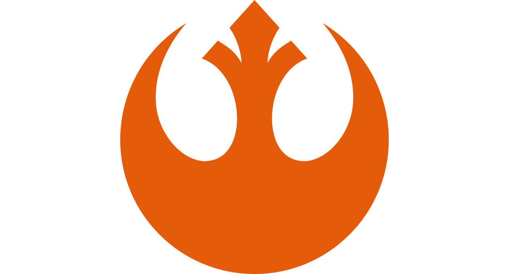
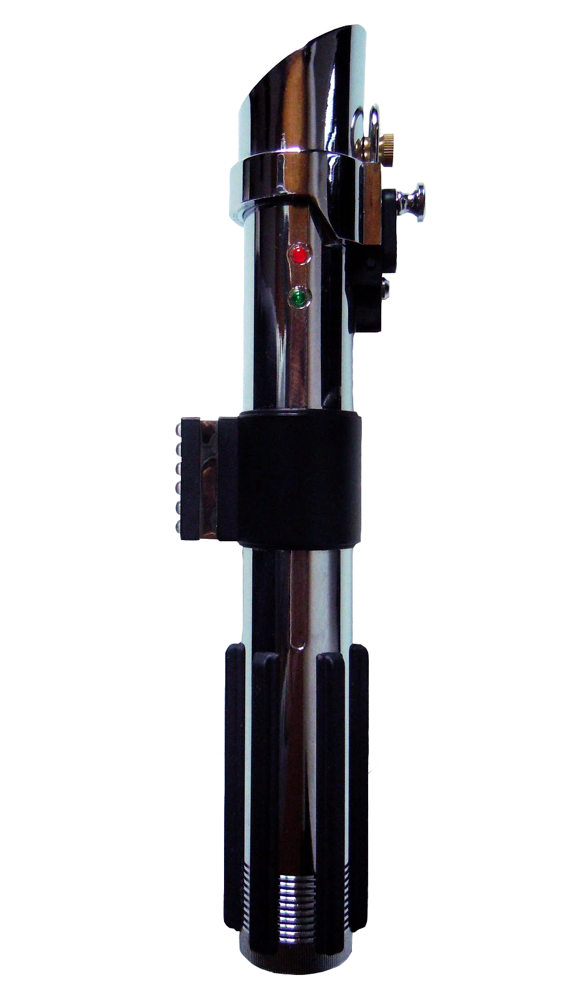
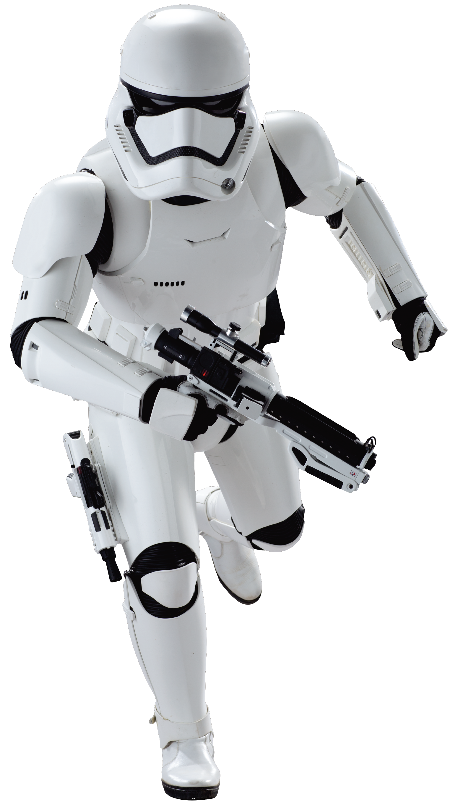
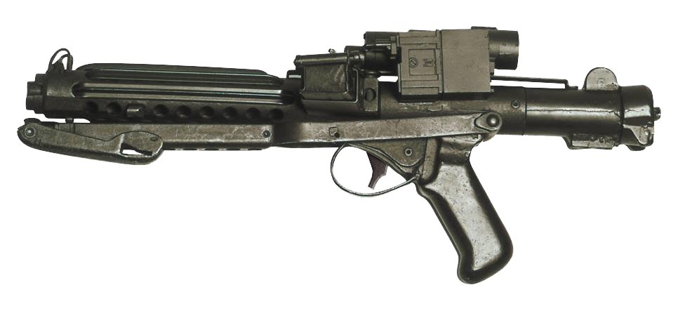
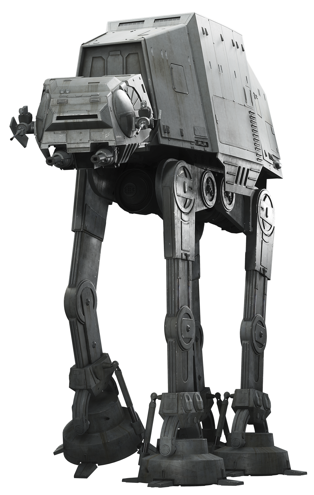

Os Sith
Uma ordem de guerreiros seguidores de Bogan que se opõem aos Jedi
Há milhares de anos, quando as grandes nove naves-pirâmides (conhecidas como Tho-Yor) se espalharam pela galáxia em busca de raças sensitivas à Força com intuito de leva-las ao planeta Tython para se reunirem e discutirem sobre a Força, uma dessas raças experimentou os poderes de Bogan, precursor do chamado Lado Sombrio da Força, esta raça também foi logo conhecida por sua ambição: seu nome era Sith. Eles travaram então uma batalha pelo domínio total da Força contra a recém formada Ordem Jedi, na conhecida "Guerra da Força". Das cinzas desta grande guerra, a Ordem Jedi nasceu e cresceu pela galáxia, enquanto muitos Sith foram humilhados e retornaram a seu planeta natal pra formar um império.
Inimigos do império
A reformada Aliança Rebelde chamada Resistência
História
O Império Galáctico é o governo que subiu ao poder ao fim das Guerras Clônicas, substituindo a República Galáctica. A autoridade central residia em Darth Sidious, publicamente conhecido como o Imperador Galáctico Palpatine, que também era o Lorde Negro dos Sith.
Por quase duas décadas, o corpo legislativo foi o Senado Imperial, mas ele foi dissolvido pelo Imperador poucos dias antes da Batalha de Yavin. Durante o reino do Império, inúmeros sistemas estelares foram conquistados e atos dissidentes foram brutalmente esmagados pelo Exército e Marinha Imperiais em rápida expansão.
O Império também supervisou a quase exterminação dos Jedi, com a destruição do Templo Jedi em Coruscant e sua transformação no recém-reformado Palácio Imperial.
Poder Militar
Sabre de luz
Stormtrooper
Blaster
AT-AT
TIE fighter